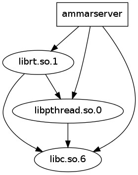

Its History
AmmarServer began as a small sockets project back on 2004 , its main use back then was serving as a portable executable that I could take with me to share static files between different machines without having administrator privilages , setting up shares , on different Operating Systems and network topologies..
Needless to say despite beeing "my own brainchild" , it wasn`t a webserver particularly useful on anything but static content and I always used Apache , MySQL and PHP as infrastructure for serious web-development work which served me well .. until I started working on embedded systems..
The Apache web server is a wonderful piece of software with a very large collection of plugins and modules and a huge percentage of the internet gets served by it every day, it is robust , mature , well documented and it is secure.. But all these positive qualities also mean that it is big and it is complex requiring a relatively large deployment and configuration payload ( for a LAMP installation ).
Using PHP ( or any other interpreted high-level language ) felt right at home from the first time I used it. With its C-like language structure but more goodies like multi line strings and loose variable declaration rules . It proved to be an invaluable tool but gradually also proved a heavy task for computer hosts lacking many computing resources or serving a very large number of requests. The picture got even worse when services like Wordpress ( which is also great ) that have many thousands lines of code generate dynamic content.. The delays , wether they where Disk , CPU or Memory based summed up and this lead to a very bad user experience while accessing and browsing various site configurations. Of course I am not the only one that has observed this and there are many projects to improve the situation and combat performance overheads such as the Hip-Hop library developed by facebook that translated php to a C++ generating a compiled binary and reduced their loads by a respectable 50%.. Other "home-made" solutions I tried was operating on memfs or ramfs partitions and many other hacks which optimized things more and more..
At some point I thought..
All this is good but is it the best that can be done ?
What would be the best way to do it ?
The least overhead possible can only be achieved by closely coupling the webserver with the dynamic content it serves. Compiled php binaries offer a faster way to generate the content but this content is loosely tied with the server that actually sends it.
Instead of having seperate "entities" for the webserver the architecture of AmmarServer statically links the webserver library with the dynamic content which is compiled into the same executable..

What is it ?
AmmarServer is a low level framework that allows the creation of binary executables which contain both their webserver and the ability to generate dynamic pages.
A sample application that demonstrates this concept and you can see , is my V4L2ToHTTP project that uses AmmarServer as its backbone. V4L2ToHTTP is aimed at a thin server that receives frames from a video device ( i.e. webcam ) encodes them into jpeg format in memory , and when a client requests a version of cam.jpg the callback dynamically snaps and uploads a new frame from the camera. The whole point of course is having the minimal possible internal "generation/communication" overhead and the lowest possible memory footprint since the frame is mmaped to the place where the kernel receives the USB camera frame data , it then uses libjpeg for a hardware optimized conversion and then just basically moves a pointer address which is utilized by the send socket command to send the frame. The datapath literally can't get any smaller..
The way to write a web-service using AmmarServer is somewhat different than writing a PHP webservice on Apache.
Each service is a different executable ( process ) that binds a TCP/IP port , instead of a collection of scripts. In order to serve clients each service spawns its own maximum number of threads ( and can get individually balanced by the kernel scheduler ) instead of preforking seperate processes like Apache does. AmmarServer works with threads ( see why ) in order to use a lower overall amount of memory , and to make it easier for the programmer ( and the Kernel process scheduler ) to prioritize serving requests on tight budgets. WebHosting services like godaddy etc.. are not fit to use this model since every "page" would have to be a seperate "server" .. So this server doesnot target this deployment scenario but rather the "dedicated hosting" one..
It is not really meant for a server that hosts 1000 different PHP services ( although I guess it could also be used that way ;P ) but for a Facebook or Youtube like project when we want a few number of services like uploading , caching and serving content , browsing pictures , editing profile information etc in order to make each of these sub tasks a different "server" as efficient as possible while maintaining a conceptually simple and maintainable model for the developer.
Coding Style
Please click here to read a small intro and howto on writing your first AmmarServer service..
Coding style helpers are kind of a stub for now , since there are key parts of the library that are missing , and providing easier calls , aliases etc for missing functionality is impossible , it is something that should really happen in the future..
What I basically want to say is that the Model->View abstractions of Rails , or other modeling techniques are a nice thing , and there isn't any relevant helper functions built in the framework , or even a coding template so unfortunately I can't tell you how to organize your content for now..
I would guess that AmmarServer would naturaly mix well with ECPG (PostgreSQL embedded for C ) and that the state information could be kept there if you want to use SQL. Most of the visual things ( CSS , images , videos , audio , JScripts ) should be in static files , and that the callbacks for conent shouldn't be thousands lines of code but instead use external functions that fit the model of the problem you are trying to solve..
Future Planned Projects using AmmarServer
- An opensource RomPager alternative or Webmin alternative
- A more efficient version of myloader
- Replacing Apache as the Web Interface of GuarddoG robot
- Making a Video Surveillance daemon like zoneminder with emphasis on performance and small system footprint
- Replacing my WebServer ( for http://ammar.gr ) with a Rasberry pi running AmmarServer
Deployment
To download AmmarServer you can click here or issue "git clone http://github.com/AmmarkoV/AmmarServer.git" on your terminal
To compile it issue ./make ( not make ) while beeing in the root directory of the repo..
To run it using the default settings issue ./run_ammarserver
You should review the list of open issues to better inform yourself of the current state of the server
AmmarServer is relatively stable , but not thoroughly tested ( security , pentesting etc )
I certainly hope you will find it an interesting and handy codebase..

Download AmmarServer
Latest Snapshot